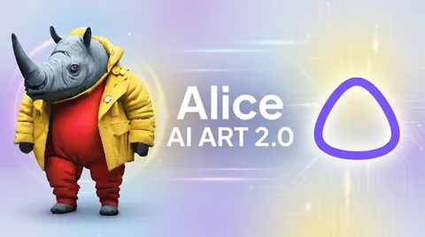

В Алисе AI и Шедевруме теперь работает Alice AI ART 2.0 — это большой шаг к созданию unified-модели, которая одинаково хорошо умеет генерировать и редактировать картинки. Команда генеративных моделей в компьютерном зрении рассказала на Хабре об экспериментах на пути к решению — удачных и не очень. В этом разборе сосредоточимся на архитектурной части.
Несколько вводных
В мультимодальном ассистенте Алиса AI есть два базовых сценария: T2I и I2I. До релиза они жили как два разных стека — каждый со своими моделями, данными и метриками. И сейчас мы сделали большой шаг их объединению в модели.
В Alice AI ART 1.0 был классический для T2I диффузионный свёрточный генератор с текстовым энкодером на базе LLM. А редактирование работало на своей базовой модели и своём пайплайне инференса. Это приносило много сложностей в разработке и продуктизации.
Хотелось свести две модели в одну и при этом поднять качество каждой.
Unified-претрейн
Главный герой решения — общий претрейн на данных обоих типов («текст → картинка» и «картинка + инструкция → картинка»). Была гипотеза, что общий визуальный и текстовый контекст перетекает между задачами и улучшает качество. Например, концепты, выученные на T2I, становятся доступны в I2I без дополнительного сбора данных. И это действительно подтвердилось.
Что поменялось в архитектуре
Результаты
В обеих задачах модель стала заметно лучше прошлой версии и по нашим замерам сейчас занимает второе место после Gemini 3.1 Flash.
Ещё один показатель — это реакция пользователей. Число скачиваний результатов генерации и редактирования выросло на 37 %, а запросов на генерацию с персонажем стало больше на 23 %.
Больше подробностей найдёте в хабростатье.
CV Time
